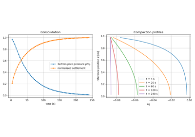
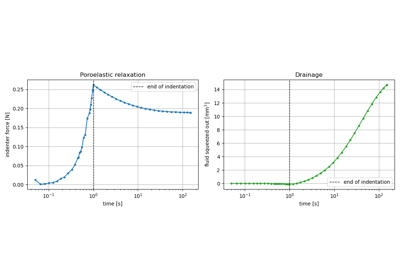
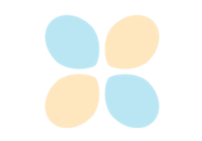

Poromechanics
Biot poroelasticity of saturated porous media, in small and finite strain. See Poromechanics for the formulation.

Finite strain consolidation of a hyperelastic porous column
Finite strain consolidation of a hyperelastic porous column

Indentation of a hyperelastic soft tissue: fluid exudation
Indentation of a hyperelastic soft tissue: fluid exudation

Inf-sup (LBB) stable elements: Taylor-Hood interpolation
Inf-sup (LBB) stable elements: Taylor-Hood interpolation